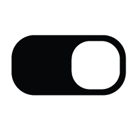

หน้าแรก
เกี่ยวกับเว็บไซต์
เริ่มบทเรียน
แบบทดสอบก่อนเรียน

▲
Advanced Photo Editor
บทเรียนที่ 3.1: Adjustment And Adjustment Layer
บรรยาย
บทเรียนที่ 3.2: Matching Photo Color with Curves
บรรยาย
บทเรียนที่ 3.3: Layer Mask
บรรยาย
บทเรียนที่ 3.4: Creating Shadow
บรรยาย
บทเรียนที่ 3.5: High Pass Filter
บรรยาย
บทเรียนที่ 3.6: Blur
บรรยาย
บทเรียนที่ 3.7: Glow Up
บรรยาย
บทเรียนที่ 3.8: Selection เรียนรู้ในเครื่องมือสำหรับแก้ไขพิกเซลเพียงบางส่วน
บรรยาย
เเบบทดสอบหลังเรียน